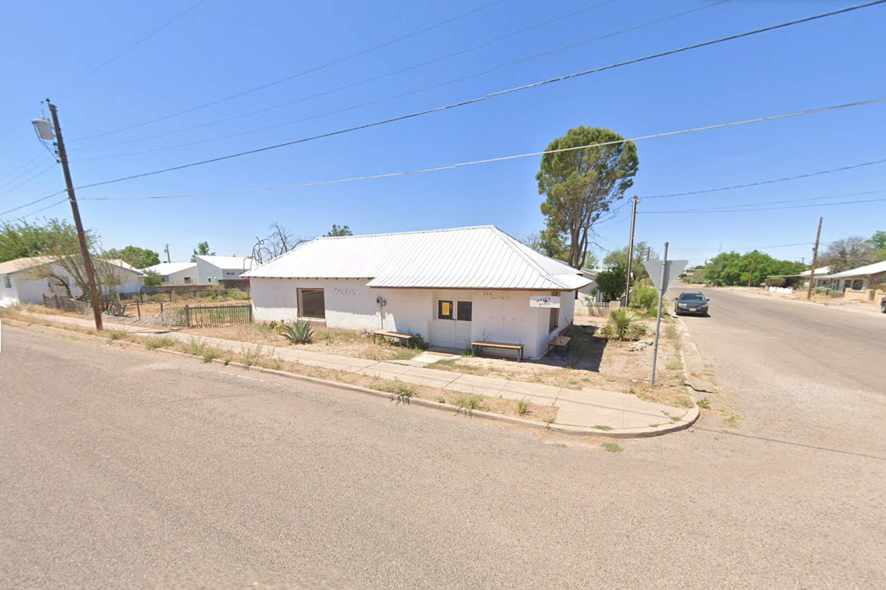

Charlotte Zhang
b. 1999
Charlotte Zhang is an artist, filmmaker, and occasional writer interested in reenactments of shared fantasy, social scripts produced by spectacle, the libidinal investments and erotic economies which undergird state-sanctioned violence and other practices of nation-building, the perpetual collapse of punishment and celebration; vengeance.
Exhibitions

Honor First
Carlos Agredano, Samar Al-Summary, rafa esparza, Sophie Friedman-Pappas, D.A. Gonzales, Christal Pérez, Cielo Saucedo, and Charlotte Zhang
Jan - March 2025